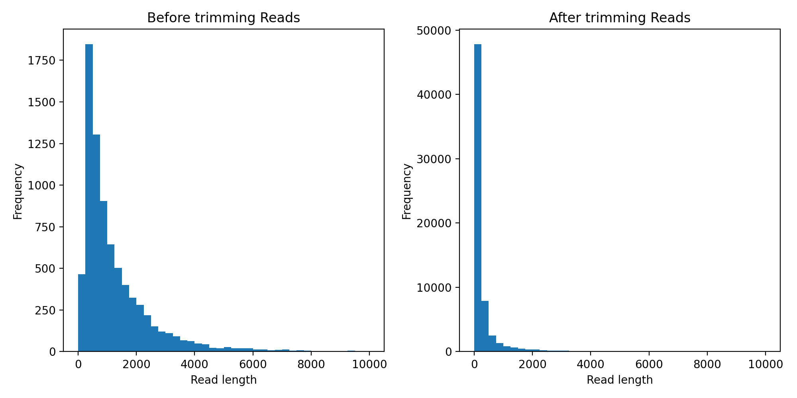
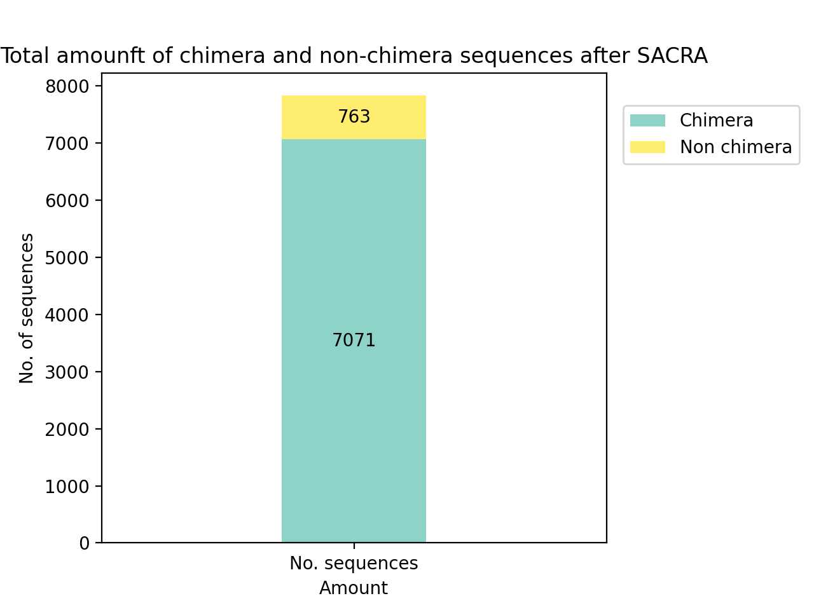
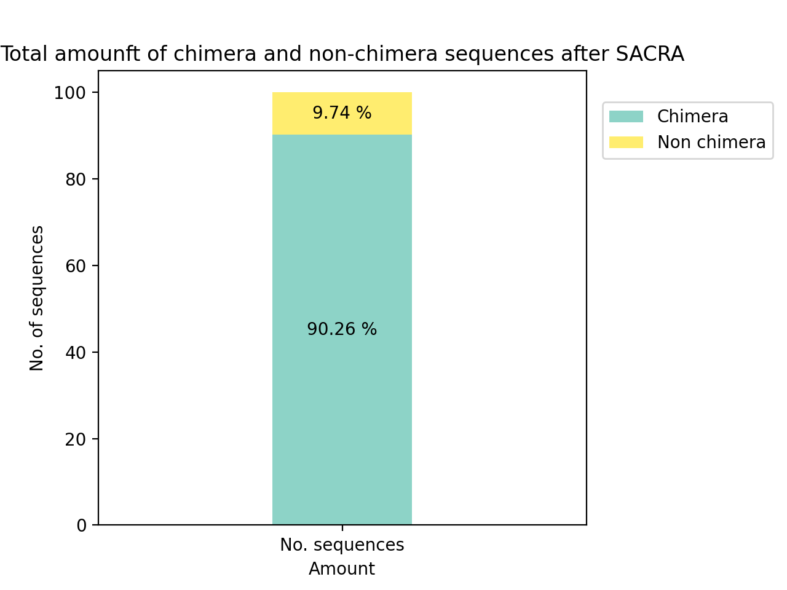
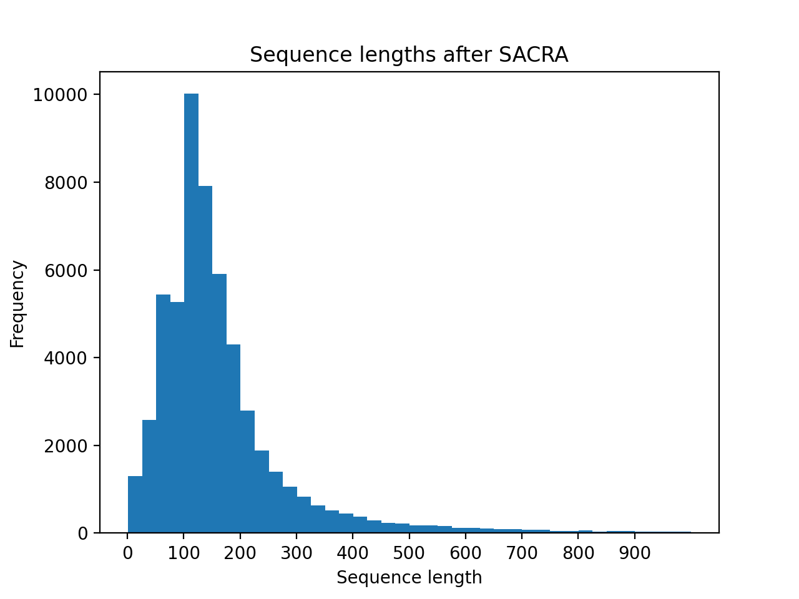
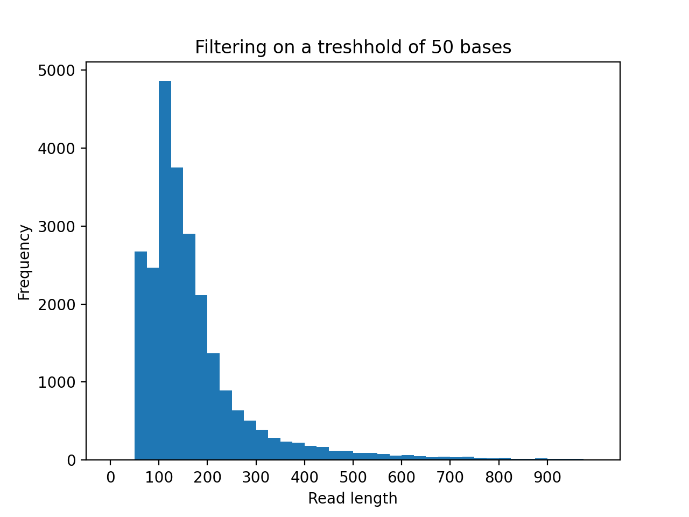
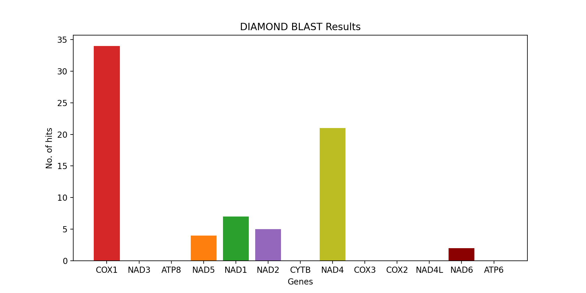
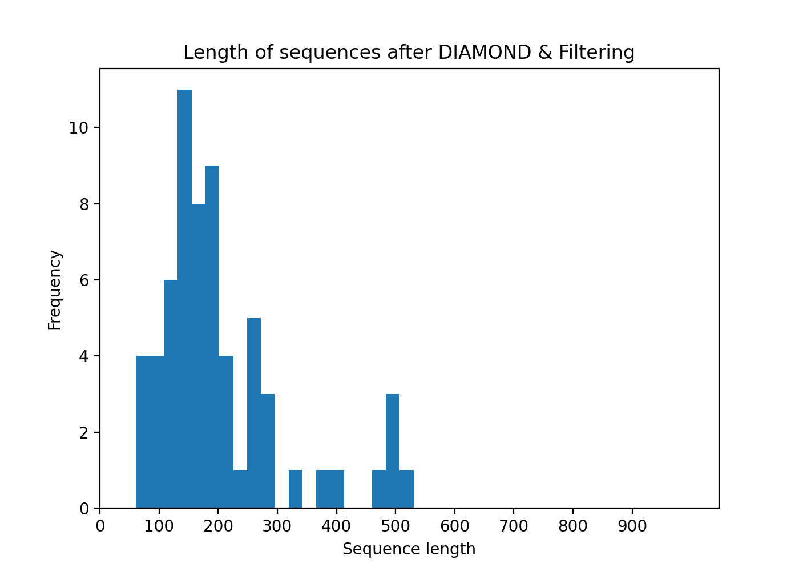

Statistical Report - Workflow
Porechop ABI
Trimming adapters from read ends
- 1D2_part_2_end: CACCCAAGCAGACGCCAGCAATACGTAACT
- SQK-NSK007_Y_Bottom: GCAATACGTAACTGAACGAAGT
- 1D2_part_2_start: CTTCGTTCAGTTACGTATTGCTGGCGTCTGCTT
- SQK-NSK007_Y_Top: AATGTACTTCGTTCAGTTACGTATTGCT
- Consensus_1_start_(100.0%): CATTGTACTTCGTTCAGTTACGTATTGCT
Adapters Removed
6900 / 7838 reads had adapters trimmed from their start (240693 bp removed)
29 / 7838 reads had adapters trimmed from their start
5196 / 7838 reads had adapters trimmed from their start (71641 bp removed)
Prowler Trimming

Split Amplified Chimeric Read Algorithm (SACRA)



SACRA Filtered Reads

DIAMOND
- For the headers found 1 time(s) after DIAMOND: 61 sequences.
- For the headers found 2 time(s) after DIAMOND: 1 sequences.
- For the headers found 0 time(s) after DIAMOND: 24906 sequences.

